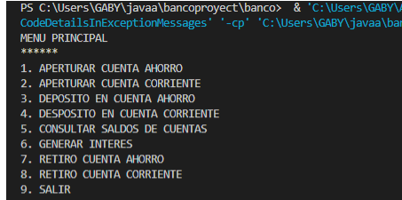
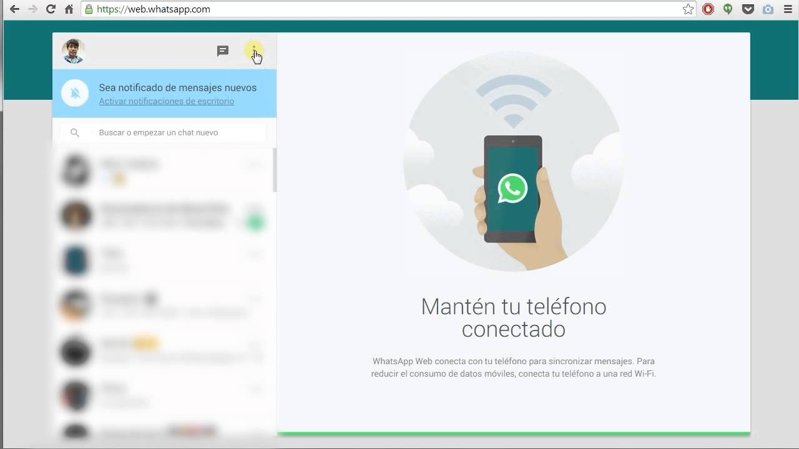

Habilidades adquiridas en proyectos
- JavaScript
- Depositos
- Consultar el saldo de la cuenta
- Interes
- Retiros de las cuentas
- poder guardar los mensajes en una base de datos
- rediseñar el modelo
- interactuar con los usuarios DIRECCION DEL CODIGO
proyecto banco
En este proyecto se puede registrar una cuenta sea corriente o de ahorro
otras caracteristicas como:
proyecto beta de whatsapp
En este proyecto se pudo hacer un whatsapp rapido y de forma sencilla
con sus caracteristicas como:
Python
trabajos inicio en Python

En este proyecto se puede ver reflejado los primeros conocimientos en Python
link trabajos inicio en Python